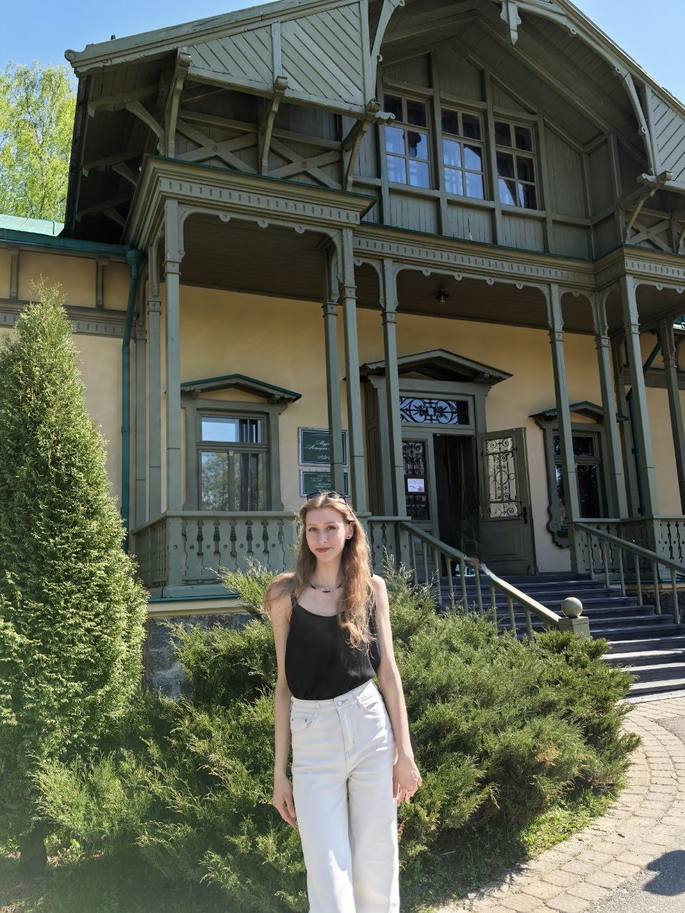
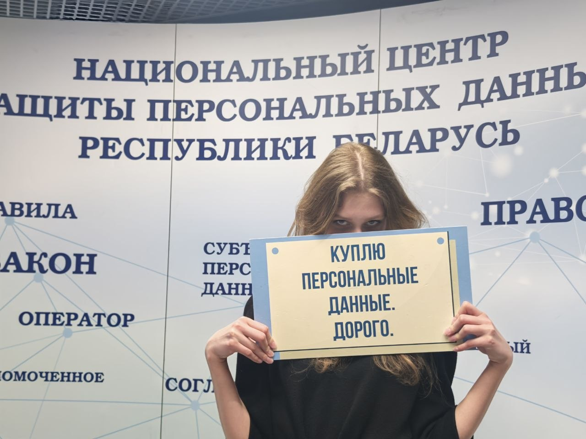
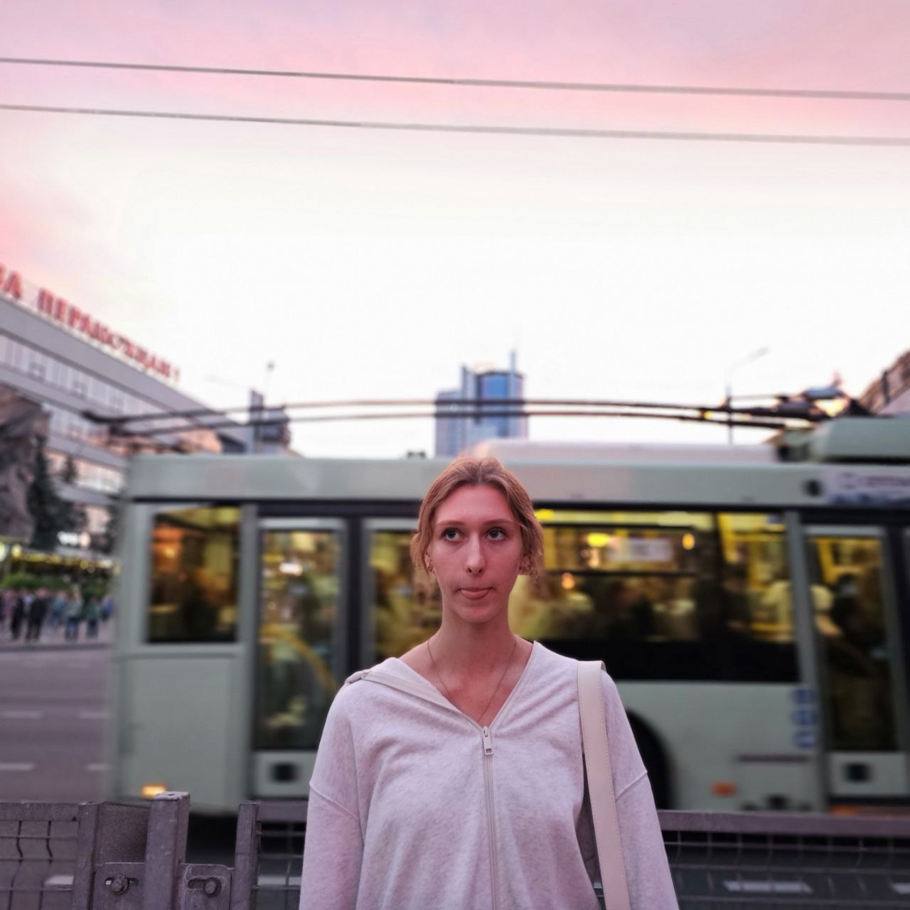
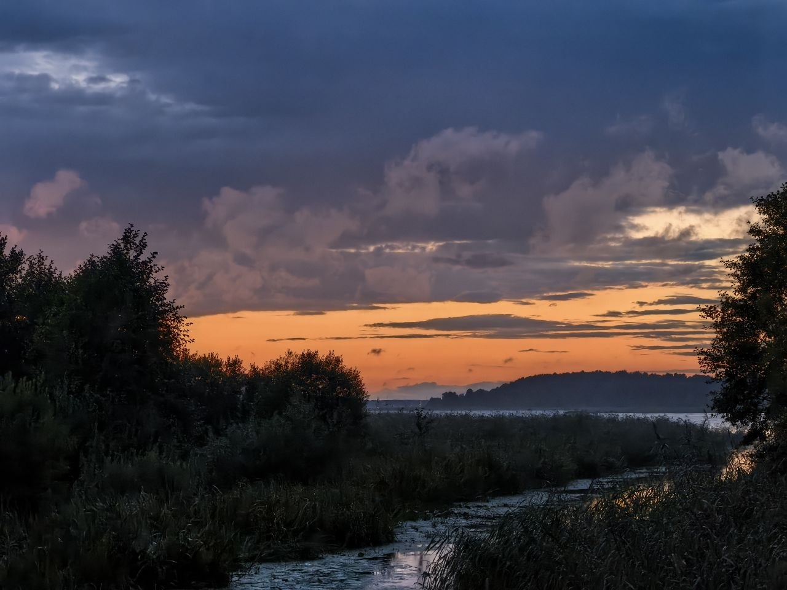
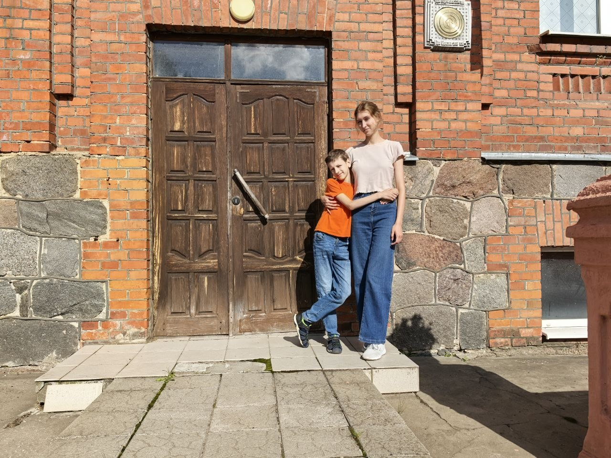

Экзамены • Работа • Браславские озёра • Семья

Это лето началось с серьёзного испытания — подготовки к экзаменам и сдачи сессии в академии. Было много бессонных ночей, конспектов и переживаний, но результат того стоил! Я успешно сдала сессию и теперь могу с чистой совестью отдыхать.


Параллельно с учёбой я работала. Это дало мне ценный опыт. Я научилась лучше планировать своё время и находить баланс между делами и отдыхом.

Конечно же, лето — это время для близких. Я проводила много времени с семьёй и друзьями, мы часто выезжали в лес на природу. Шашлыки, прогулки по лесу и душевные разговоры — именно эти моменты делают лето по-настоящему тёплым и запоминающимся.
Эти воспоминания я буду бережно хранить весь год, до следующего лета.
